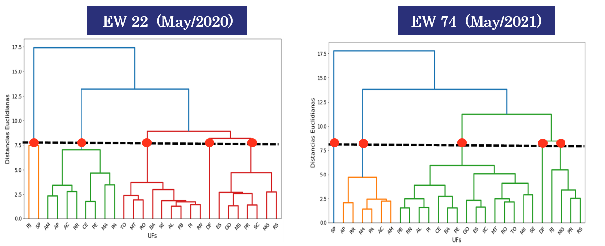
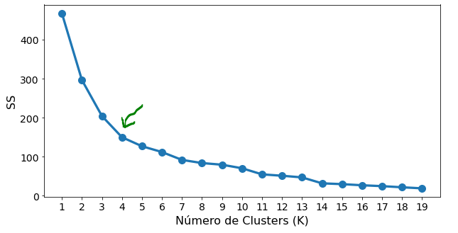
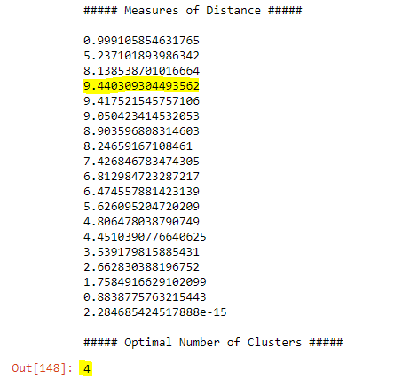
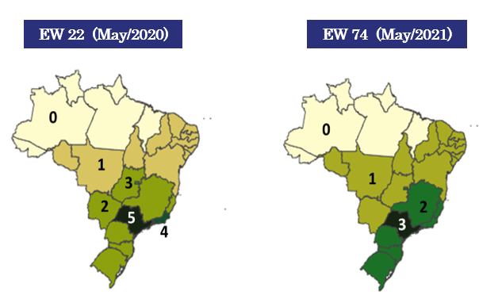
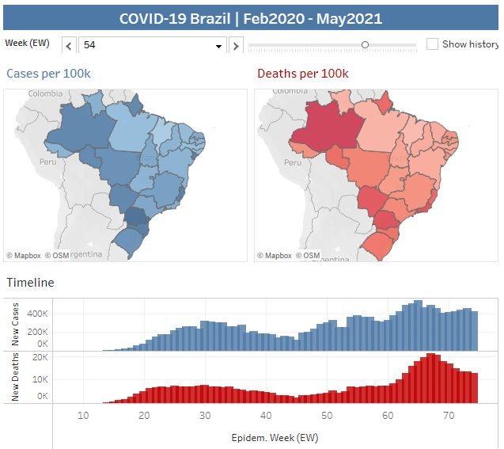

Project 2: My COVID-19 Thesis

Challenge
This was my thesis project presentation in order to become a Chemical Engineer, back in 2021. I used Data Science tools and concepts to analyze statistically COVID-19 data in Brazil during the pandemic, between Feb-2020 and May-2021.
My objective was to create a COVID-19 Index for all 26 brazilian states + its federal unit, making 27 observations in total, for every Epidemiological Week (EW). This index was called IC19 and it was created using some Data Science tools: Principal Component Analysis (PCA) (using SPSS) and some Unsupervised Learning approaches (Dendrogram and K-Means, that are 2 types of Clustering techniques. The former is a Hierarchical and the latter is a Non-Hierarchical type). Since I will be talking about the Python part of the work, alonside the Tableau one, the PCA algorithm and the SPSS handling will not be discussed on this topic.
You can check the database used in this work on my GitHub page and, also, the Python code used for building the K-Means and the Dendrogram algorithms (link later): My COVID-19 Thesis. All of the information in the database were compiled from official brazilian's government datasets.
Tools Used
Tableau
Details: Part 1 (Python)
After performing the PCA Analysis on SPSS, I imported the dataframes (dfs) to the Jupyter environment and did some data cleaning/wrangling, such as concatenating dfs and grouping them by the brazilian federal units ("UF" or "FU", in English). That enabled me to implement the clustering algorithm regarding COVID-19 brazilian data, monthly.
Then, I built the Dendrogram for that specific month, using the scipy.cluster.hierarchy library. I implemented it using the Ward clustering method as the linkage parameter and formated so it became clearer for the user to interpret and analyze the results. Here are examples:

As one of my thesis objectives, I had to compare the Hierarchical and Non-Hierarchical clustering methods, so I also built the K-Means algorithm. For that, I used the sklearn.cluster library. To start the program, differently from the first method talked above, we need to give a starting point, that is, the number of clusters (K) that we want to group our observations by. In order to find it, a very common technique is to apply the elbow method.
This is a technique that provides a recommended value for K graphically by finding the "elbow" of the WCSS curve (mathematically speaking, it basically consists of finding the inflexion point). After applying it, I'd rerun the K-Means code with the given K obtained with the elbow method. A WCSS curve example is given as follows:

Sometimes, it is not so clear where the inflexion point is. So, another great approach is to calculate the distance between a given point and the line built between the first and the last point of the sample. The inflexion point (that will give us the K) will be the furthest one, that is, the one that will have the biggest distance from that line. You can check the equation used for calculating those distances on my Github page 😄

In the end, I visualized the clustering results directly in a Brazil map with the plotly library and, also, by importing some json files. Here are some of the visualizations built:

Details: Part 2 (Tableau)
Although the dashboard construction was not a part of my thesis presentation, I decided to do it anyway, as part of my self-development process. This dashboard is available on my Tableau Public page and you can check out here in more detail: COVID-19 Thesis
This dashboard brings a summary of the COVID-19 scenario in Brazil, between Feb2020 and May2021, with deaths and cases ratios per 100k habitants, per federative unit. These were brought with the "frame" functionality in Tableau, allowing the user to see the evolution of those parameters on every Epidem. Week (EW). It's also possible to see the timeline, containing the consolidated numbers of cases and deaths, per EW in Brazil as a whole.
To sum up, this project was very interesting and gave me not only a hands-on experience, but an opportunity to be in contact with more technical and advanced data science tools. Thank you for the reading! 😀
